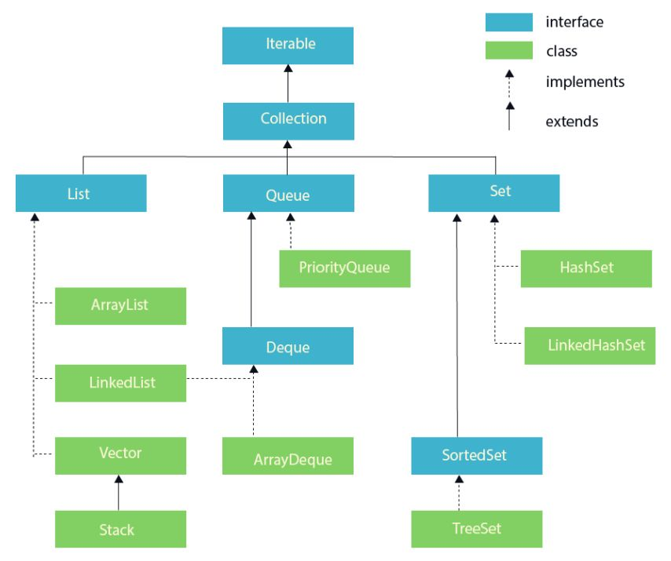

is a framework. provides an architecture to store and manipulate the group of objects. operations - search,sort,insert,delete,manipulation Interfaces - Set,List,Queue,Deque Classes - ArrayList,LinkedList,Vector,PriorityQueue,HashSet,LinkedHashSet,TreeSet java.util package contains all the classes and interfaces

Methods
import java.util.*;
class JavaCollectionDemo {
public static void main(String args[]) {
ArrayList<String> list = new ArrayList<String>();
list.add("abc");
list.add("abcb");
Iterator itr = list.iterator();
while (itr.hasNext()) {
System.out.println(itr.next());
}
}
}